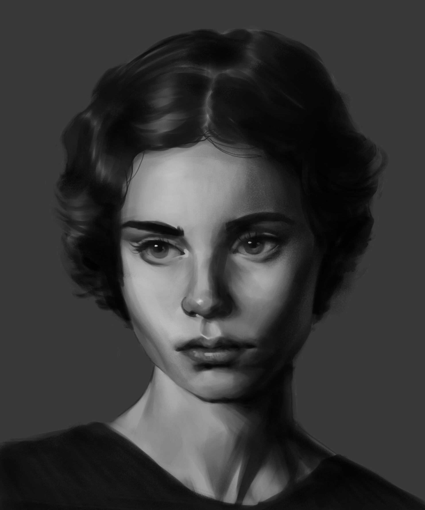

My name is Jazmine Amunga and Photography has always been my passion I believe that every photograph tells a story. My aim is to capture genuine emotions, beautiful landscapes, and unforgettable moments that people can treasure for a lifetime.

I'm passionate about creating photographs that are authentic, creative, and timeless. Whether I'm capturing portraits, events, or nature, I believe every image should tell a story and preserve a meaningful moment.
My work focuses on emotion, composition, lighting, and attention to detail to create photographs that feel natural and memorable.
Capturing personality and confidence in every portrait.
Finding beauty in landscapes, wildlife and natural light.
Preserving life's most important celebrations and memories.